전자기사 (2012-09-15 기출문제)
1과목: 전기자기학
1. 자성체 경계면에 전류가 없을 때의 경계 조건으로 틀린 것은?
- 자계 H의 접선 성분 H1T=H2T
- 자속밀도 B의 법선 성분 B1N=B2N
- 경계면에서의 자력선의 굴절
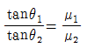
- 전속밀도 D의 법선 성분
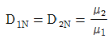
(정답률: 75%)

2. 페러데이 법칙 중 옳지 않은 것은? (단,
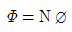
로서 쇄교 자속수이다.)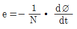
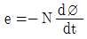
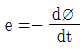
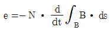
(정답률: 64%)
3. 그림과 같은 원통좌표계에서 자속밀도
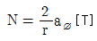
이다. 0.5≤ r≤ 2.5[m]이고, 0≤ z≤ 2.0[m]로 정의되는 평면을 지나는 자속의 크기를 구하면?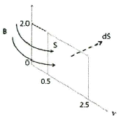
- 4.12[Wb]
- 5.33[Wb]
- 6.44[Wb]
- 7.23[Wb]
(정답률: 37%)
4. 전위 V가 V=xy2z[V]일 때, 이 원천인 전하밀도 ρ[C/m3]는?
- 0
- -2xzɛ0
- -2xy2z
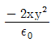
(정답률: 30%)
5. 커패시터를 제조하는데 A, B, C, D와 같은 4가지의 유전재료가 있다. 커패시터내에서 단위체적당 가장 큰 에너지 밀도를 나타내는 재료부터 순서대로 나열하면? (단, 유전재료 A, B, C, D의 비유전율은 각각 ετA=8, ετB=10, ετC=2, ετD=4이다.)
- C > D > A > B
- B > A > D > C
- D > A > C > B
- A > B > D > C
(정답률: 알수없음)
6. 유전율이 ε, 도전율이 σ이고, 반경이 r1, r2(r1＜r2), 길이가 R인 동축케이블에서 저항 R은 얼마인가?
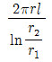
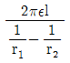
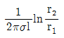
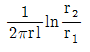
(정답률: 70%)
7. 균일하게 만들어진 알루미늄 도체가 있다. 이 도체의 도전율은 3.5×107[Ωㆍm]-1이고 전류밀도는 8×105[A/m2 ]이라고 한다. 이 도체에서 서로 1[m] 떨어진 두 점사이의 전위차는 약 몇 [V]인가?
- 0.023[V]
- 0.115[V]
- 0.23[V]
- 1.15[V]
(정답률: 알수없음)
8. 자속밀도가 B=30[Wb/m2]의 자계 내에 i=5[A]의 전류가 흐르고 있는 길이 ℓ=1[m]인 직선 도체를 자계의 방향에 대해서 60°의 각을 짓도록 놓았을 때, 이 도체에 작용하는 힘[N]은?
- 75[N]
- 150[N]
- 130[N]
- 120[N]
(정답률: 50%)
9. 한 변의 길이가 ℓ인 정삼각형 회로에 전류 I가 흐르고 있을 때 삼각형 중심에서의 자계의 세기[AT/m]는?
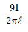
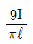
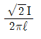
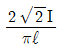
(정답률: 알수없음)
10. 공기 중에서 1[V/m]의 전계를 2[A/m2]의 변위전류를 흐르게 하려면 주파수는 약 몇 [MHz]가 되어야 하는가?
- 18[MHz]
- 1800[MHz]
- 3600[MHz]
- 36000[MHz]
(정답률: 알수없음)
11. 도전율 σ, 투자율 μ인 도체에 교류전류가 흐를 때의 표피효과의 관계로 옳은 것은?
- 주파수가 높을수록 작아진다.
- μ0가 클수록 작아진다.
- σ가 클수록 작아진다.
- μs가 클수록 작아진다.
(정답률: 알수없음)
12. 2[Ω]과 4[Ω]의 병렬회로 양단에 40[V]를 가했을 때 2[Ω]에서 발생하는 열은 4[Ω]에서의 열의 몇 배인가?
- 2배
- 4배
- 6배
- 8배
(정답률: 알수없음)
13. 내원통의 반지름 a, 외원통의 반지름 b인 동축원통 콘덴서의 내외 원통사이에 공기를 넣었을 때 정전용량이 C0이었다. 내외 반지름을 모두 3배로 하고 공기대신 비유전율 9인 유전체를 넣었을 경우의 정전용량은?
- C0
- 9C0
- C0/3
- C0/9
(정답률: 알수없음)
14. 전류에 의한 자계의 법칙으로 옳지 않은 것은?
- 암페어의 오른 나사법칙
- 비오ㆍ사바르의 법칙
- 암페어 주회 적분의 법칙
- 가우스의 법칙
(정답률: 알수없음)
15. 진공 중에 선전하밀도가 ρ[C/m], 반지름이 a[m]인 아주 긴 직선원통 전하가 있다. 원통 중심축으로부터 a/2[m]인 거리에 점의 전계의 세기는?
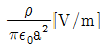
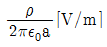
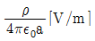
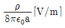
(정답률: 25%)
16. 철심의 길이를 lc[m], 단면적을 S[m2], 투과율을 μ[H/m]라 하고 공극의 길이를 lg[m], 공극부분의 투과율을μ0[H/m]라 할 때, 합성자기 저항 Rm[AT/Wb]은?
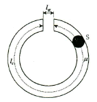
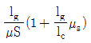
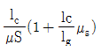
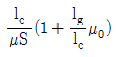
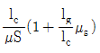
(정답률: 54%)
17. 균등전류가 흐르고 있는 무한히 긴 원주도체의 내부 인덕턴스의 크기는 어떻게 결정되는가?
- 도체의 인덕턴스는 0으로 결정된다.
- 도체의 기하학적 모양에 따라 결정된다.
- 주위의 자계의 세기에 따라 결정된다.
- 도체의 재질에 따라 결정된다.
(정답률: 59%)
18. 대지의 고유저항이 ρ[Ωㆍm]일 때 반지름 a[m]인 반구형 접지전극의 접지저항은 몇 [Ω]인가?
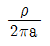
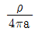
- ρ/πa
- 2πρa
(정답률: 알수없음)
19. 전하 q와 -q가 S만큼 거리를 두고 위치해 있다. 이 때 외부에서 그림과 같이 전계 E를 가했다. 경우 포텐샬 에너지의 식으로 합당한 것은?
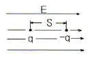
- -2qSE
- -qSE
- -2q2SE
- -q2SE
(정답률: 67%)
20. 다음 중 전류 운송자(carrier)에 의한 전류가 아닌 것은?
- 전도전류
- 변위전류
- 흡수전류
- 누설전류
(정답률: 알수없음)
2과목: 회로이론
21. 정현파 교류전압의 평균값이 350[V]일 때 실효값은?
- 164[V]
- 240[V]
- 389[V]
- 424[V]
(정답률: 알수없음)
22. 시정수가 τ인 R-L 직렬 회로에 직류 전압을 가할 때 시간 t=3τ에서 회로에 흐르는 전류는 최종 의 몇 [%]인가? (단, e는 2.718이다.)
- 63.2[%]
- 86.5[%]
- 95.0[%]
- 98.2[%]
(정답률: 55%)
23. 구동점 임피던스에 있어서 영점은?
- 전압이 가장 큰 상태이다.
- 회로의 단락상태를 의미한다.
- 회로의 개방상태를 의미한다.
- 전류가 흐르지 않는 상태이다.
(정답률: 50%)
24. v(t)=100sin ωt[V]이고, i(t)=2sin(ωt-π/3)[A]에 대한 평균 전력은?
- 25[W]
- 50[W]
- 75[W]
- 125[W]
(정답률: 알수없음)
25. 파형률에 관한 설명으로 틀린 것은?
- 실효값을 평균값으로 나눈 값이다.
- 클수록 정류를 했을 때 효율이 좋아진다.
- 어떠한 파형에 대하여도 그 값은 1 이상이다.
- 동일한 파형에 대하여는 주파수에 관계없이 일정하다.
(정답률: 알수없음)
26. 함수 f(t)=tat를 라플라스 변환시킨 것은?
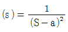
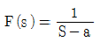
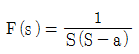
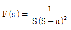
(정답률: 알수없음)
27. 차단 주파수에 대한 설명으로 옳지 않은 것은?
- 출력 전압이 최대값의 1/√2이 되는 주파수이다.
- 전력이 최대값의 1/2이 되는 주파수이다.
- 전압과 전류의 위상차가 60°가 되는 주파수이다.
- 출력 전류가 최대값의 1/√2이 되는 주파수이다.
(정답률: 60%)
28. 다음 회로에서 전압 전달비를 구하면? (단, S=jω이다.)
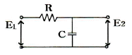
- 1/RCS+1
- R/RCS+1
- CS/RCS+1
- RCS/RCS+1
(정답률: 50%)
29. 단자 외부에 연결되는 임피던스를 예상해서 도입되는 파라미터는?
- 반복 파라미터
- 영상 파라미터
- H 파라미터
- 임피던스 파라미터
(정답률: 50%)
30. 1000[mH]인 코일의 리액턴스가 377[Ω]일 때 주파수는?
- 6[Hz]
- 36[Hz]
- 60[Hz]
- 360[Hz]
(정답률: 알수없음)
31. 정 K형 필터에서 임피던스 Z1, Z2와 공칭임피던스 K와의 관계는?
- Z1,Z2=K
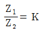
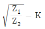
- Z1Z2=K2
(정답률: 50%)
32. R-C 직렬 회로망에서 스위치 S가 t=0일 때 닫혔다고 하면 전류 I(t)는? (단, 콘덴서에는 초기 전하가 없었다.)
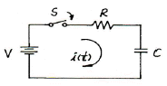
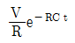
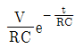
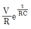
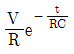
(정답률: 알수없음)
33. 어떤 회로망의 4단자 정수가 A=8, B=j2, D=3+j2이면 이 회로망의 C는?
- 3-j4.5
- 4+j6
- 8-j11.5
- 24+j14
(정답률: 46%)
34. R-L-C 직렬회로에서 공진주파수보다 큰 주파수에서의 전류는?
- 전류가 흐르지 않는다.
- 인가전압보다 위상이 뒤진다.
- 인가전압보다 위상이 앞선다.
- 인가전압의 위상과 동일하다.
(정답률: 알수없음)
35. 두 개의 코일 a, b를 직렬 접속하였을 때 합성 인덕턴스가 121, 반대로 연결하였을 때 합성 인덕턴스가 9였다. 코일 a의 자기인덕턴스가 20[mH]라면 결합계수(k)는?
- 0.43
- 0.68
- 0.86
- 0.93
(정답률: 알수없음)
36. 전달함수
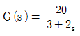
을 갖는 요소가 있다. 이 요소에 ω=2인 정현파를 주었을 때 |G(jw)|는? (단, s=jω이다.)- 2
- 4
- 6
- 8
(정답률: 알수없음)
37. 변압기 결선에서 제 3고조파를 발생하는 것은?
- Δ-Y
- Y-Δ
- Δ-Δ
- Y-Y
(정답률: 알수없음)
38. 감쇠기의 입력전력과 출력전력의 비가 1/00일 때의 감쇠량은?
- 1[dB]
- 10[dB]
- 20[dB]
- 100[dB]
(정답률: 47%)
39. 형광등에 100[V]를 가했을 때, 0.5[A]의 전류가 흐르고 그 소비전력은 40[W]이었다면, 이 형광등의 역률은?
- 0.5
- 0.6
- 0.7
- 0.8
(정답률: 67%)
40. R=80[Ω], Xc=60[Ω]인 R-C 직렬회로에 교류 220[V]를 인가할 때의 역률은?
- 0.4
- 0.6
- 0.8
- 0.9
(정답률: 알수없음)
3과목: 전자회로
41. 연산증폭기의 이득 대역폭 적(GㆍB)은 0.35/상승시간 의 식으로 계산된다. 상승시간이 0.175[μs]인 연산증폭기를 이용하여 10[kHz]의 정현파 신호를 증폭하려고 할 때 최대로 얻을 수 있는 전압이득은 약 몇 [dB]인가?
- 26[dB]
- 34[dB]
- 40[dB]
- 46[dB]
(정답률: 알수없음)
42. 다음과 같은 회로 입력에 정현파를 인가하였을 때 출력파형으로 가장 적합한 것은? (단, ZD는 이상적인 제너다이오드이다.)
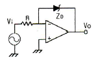
- 구형파형
- 정현파형
- 삼각파형
- 톱날파형
(정답률: 56%)
43. 다음 회로는 어떤 궤환 증폭회로인가?
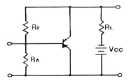
- 전류궤환 증폭회로
- 전압궤환 증폭회로
- 정전류궤환 증폭회로
- 정전압궤환 증폭회로
(정답률: 알수없음)
44. Push-Pull 증폭기가 단일 Transistor 증폭기에 비해 그 장점을 잘못 설명한 것은?
- 양극 효율 증대
- Push-Pull 증폭기의 큰 출력
- 전원의 맥동에 의한 잡음제거
- 기수고조파에 의한 일그러짐 감소
(정답률: 알수없음)
45. 저주파 증폭기의 직류 입력은 2[kV], 400[mA]이고 효율은 80[%]로 보면 부하에서 나타나는 전력은?
- 640[W]
- 600[W]
- 480[W]
- 320[W]
(정답률: 알수없음)
46. 컬렉터 접지형 증폭기의 특징에 대한 설명 중 가장 옳지 않은 것은?
- 전류증폭도는 수십에서 수백 정도이다.
- 전압증폭도는 약 1이다.
- 입ㆍ출력 전압의 위상은 동위상이다.
- 입력임피던스는 낮고, 출력임피던스는 높다.
(정답률: 59%)
47. α가 0.99, 차단주파수가 30[MHz]인 베이스접지 증폭회로를 이미터접지로 하였을 경우 차단주파수는 약 몇 [MHz]인가?
- 0.1[MHz]
- 0.3[MHz]
- 1.2[MHz]
- 3.0[MHz]
(정답률: 46%)
48. 다음 중 수정발진기에 대한 설명으로 적합하지 않은 것은?
- 압전 효과를 이용한다.
- 발진 주파수의 안정도가 매우 높다.
- 수정편의 컷 방법에 따라 온도 계수가 달라진다.
- 수정편이 같은 두께일 때 X컷보다 Y컷의 발진주파수가 높다.
(정답률: 알수없음)
49. 다음 중 발진주파수를 안정시키는 방법으로 적합하지 않은 것은?
- 체배 증폭단을 둔다.
- 항온조 시설을 한다.
- 정전압 회로를 설치한다.
- 온도 보상용 부품을 사용한다.
(정답률: 70%)
50. 부궤환 증폭기의 일반적인 특징 중 옳지 않은 것은?
- 증폭도가 증가한다.
- 주파수 특성이 좋다.
- 일그러짐과 잡음이 감소한다.
- 부하 변동에 의한 이득 변동이 감소한다.
(정답률: 37%)
51. 다음 중 QAM(직교진폭변조) 방식에 대한 설명으로 가장 적합한 것은?
- QAM 방식은 PSK 변조방식의 일종이다.
- QAM 방식은 AM 방식과 FSK 변조방식을 혼합한 것이다.
- QAM 방식은 주파수 변조와 위상 변조 방식을 혼합한 것이다.
- QAM 방식은 정보신호에 따라 반송파의 진폭과 위상을 변화시키는 APK의 한 종류이다.
(정답률: 30%)
52. 일반적인 궤환회로에서 전압증폭도
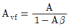
라고 하면 이 때 부궤환 작용을 할 수 있는 조건은? (단, A는 궤환이 일어나지 않을 때의 이득이다.)- |1-Aβ|＜1
- Aβ=1
- |1-Aβ|＞1
- Aβ=∞
(정답률: 알수없음)
53. 다음 회로의 명칭으로 가장 적합한 것은?
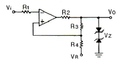
- 윈도우 비교기
- A/D 변환기
- 시미트 트리거
- 멀티바이브레이터
(정답률: 알수없음)
54. 2진수 (11100101)2를 8진수와 16진수로 바르게 변환한 것은?
- 345(8), E5(16)
- 711(8), E5(16)
- 345(8), D5(16)
- 711(8), D5(16)
(정답률: 40%)
55. 트랜지스터의 컬렉터 누설전류가 주위 온도변화로 1.2[μA]에서 239.3[μA]로 증가되었을 때 컬렉터의 전류변화가 1[mA]이라면 안정도 계수 S는?
- 1
- 2.3
- 4.2
- 6.3
(정답률: 알수없음)
56. 다음과 같은 FET 소신호 증폭기회로에서 입력전압이 20[mV]일 때 출력전압으로 가장 적합한 것은?
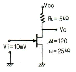
- 입력전압과 동위상인 100[mV]
- 입력전압과 역위상인 200[mV]
- 입력전압과 동위상인 300[mV]
- 입력전압과 역위상인 400[mV]
(정답률: 알수없음)
57. 다음과 같은 윈 브리지형 발진 회로의 발진 주파수는?
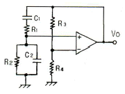
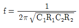
(정답률: 20%)
58. α=0.98, ICO=5[μA]인 트랜지스터에서 IB=100[μA]일 때 IC는 몇 [mA]인가?
- 2.98[mA]
- 3.98[mA]
- 5.15[mA]
- 7.25[mA]
(정답률: 58%)
59. 어떤 파형의 상부와 하부의 두 레벨을 동시에 잘라내어 입력 파형의 극히 좁은 레벨을 꺼내는 회로는?
- 클리퍼
- 슬라이서
- 리미터
- 클램퍼
(정답률: 55%)
60. 그림과 같은 브리지 정류회로에 관한 설명 중 옳지 않은 것은?
- RL에는 A쪽에서 B쪽으로 전류가 흐른다.
- RL에 흐르는 전류는 전파 정류된 파형이다.
- 다이오드에 걸리는 역방향 전압 최대치는 T의 2차 전압 최대치의 2배에 가깝다.
- RL에 걸리는 전압 최대치는 T의 2차 전압 최대치에 가깝다.
(정답률: 알수없음)
4과목: 물리전자공학
61. 원자의 성질로 4가지 양자수(n, l, m, s)로서 결정되는 한 개의 양자 상태에는 한 개만의 전자 밖에 들어갈 수 없다는 원리는?
- 루더포드(Rutherford)의 분사의 원리
- 파우리(Pauli)의 배타 원리
- 보어(Bohr)의 이론
- 아인슈타인(Einstein)의 에너지 보존 법칙
(정답률: 알수없음)
62. 페르미 디락(Fermi-Dirac) 분포에 대한 설명 중 가장 옳지 않은 것은?
- 고체내의 전자는 Pauli의 배타 원리의 지배를 받는다.
- 대부분의 전자는 이 분포의 저에너지역에 존재한다.
- 금속은 온도에 관계없이 무관하다.
- 이 분포에 의하며, 도체가 가열될 때 전자는 분자 비열 용량에 거의 영향을 주지 않는다.
(정답률: 알수없음)
63. 다음 중 전자의 비전하를 의미하는 것은?
- 전자와 전하의 비(ratio)를 의미
- 전자와 전류의 비(ratio)를 의미
- 전자와 질량의 비(ratio)를 의미
- 전류와 질량의 비(ratio)를 의미
(정답률: 37%)
64. 전자의 전체 에너지를 E, 운동량을 P라 하면 위치에너지는? (문제 오류로 실제 시험에서는 모두 정답처리 되었습니다. 여기서는 1번을 누르면 정답 처리 됩니다.)
(정답률: 64%)
65. Bragg의 반사 조건을 나타내는 식은?
- 2d cosθ = nλ
- 2d sinθ = nλ
- 2d cosθ = 1/2nλ
- 2d sinθ = 1/2nλ
(정답률: 36%)
66. 반도체에 전계를 가하면 정공의 드리프트(drift) 속도의 방향은?
- 전계와 같은 방향이다.
- 전계와 반대 방향이다.
- 전계와 직각 방향이다.
- 전계와 무관한 지그재그 운동을 한다.
(정답률: 알수없음)
67. 트랜지스터의 제조에서 에피텍셜 층(epitaxial layer)이 많이 사용되는 이유는?
- 베이스 전극을 만들기 위해서
- 베이스 영역을 좁게 만들기 위해서
- 낮은 저항의 이미터 영역을 만들기 위해서
- 낮은 저항의 기판에 같은 도전성 형태를 가진 높은 저항의 컬렉터 영역을 만들기 위해서
(정답률: 알수없음)
68. 서미스터(Thermistor) 소자에 대한 설명 중 틀린 것은?
- 반도체로 만들어진다.
- 저항의 온도계수가 + 값이다.
- 온도에 따라 저항의 값이 크게 변화한다.
- 온도 자동제어의 검출부나 회로의 온도 특성보상 등에 사용된다.
(정답률: 55%)
69. 다음 중 더블 베이스 다이오드(double base diode)라고도 하는 것은?
- 역 다이오드
- 쇼트키 다이오드
- 바렉터 다이오드
- 유니정션 트랜지스터(UJT)
(정답률: 55%)
70. 자속밀도 B[Wb/m2]인 평등자계 중에 자계와 직각 방향으로 속도 r=mv/eB[m]로 원운동을 한다. 이때 전자의 운동 주기 T[sec]는?
(정답률: 알수없음)
71. 27[℃]인 금속 도체에서 페르미 준위보다 0.1[eV] 상위에서 전자가 점유하는 확률은? (단, Boltzmann 상수 k는 1.38×10-23[J/K]이다.)
- 약 0.01
- 약 0.02
- 약 0.03
- 약 0.⑤
(정답률: 알수없음)
72. 열전자 방출에서 전자류가 온도 제한 영역에 있어서도 플레이트 전위의 상승에 의해 더욱 증가하는 현상은?
- 쇼트키 효과
- 펠티어 효과
- 지벡 효과
- 홀 효과
(정답률: 60%)
73. 실리콘으로 된 PN 접합에서 단면적이 0.5[mm2]이고 공간전하 영역의 폭이 2×10-4[cm]일 때 공간 전하 용량은? (단, 실리콘의 비유전율은 12, 진공의 유전율은 8.85×10-12[F/m]이다.)
- 약 1.62[pF]
- 약 26.6[pF]
- 약 30.4[pF]
- 약 36.6[pF]
(정답률: 알수없음)
74. 서로 다른 도체로 폐회로를 구성하고 직류전류를 흘릴 때 전류의 방향에 따라 접합 부위에 온도차가 발생되는 현상은?
- Seebeck Effect
- Peltier Effect
- Zeemann Effect
- Hall Effect
(정답률: 알수없음)
75. 트랜지스터의 베이스 폭 변조에 대한 설명으로 틀린 것은?
- 컬렉터 전압 VCB가 증가함에 따라 베이스 중성 영역의 폭이 줄어든다.
- 베이스 폭의 감소는 베이스 영역의 소수 캐리어 농도의 기울기를 증대시킨다.
- 컬렉터 역바이어스의 증가에 따라 이미터 전류와 컬렉터 전류가 감소하다.
- 베이스 폭이 감소하면 전류증폭률 α가 증대한다.
(정답률: 50%)
76. Si 단결정 반도체에서 N형 불순물로 사용될 수 있는 것은?
- 인듐(In)
- 비소(As)
- 붕소(B)
- 알루미늄(Al)
(정답률: 37%)
77. 금속 표면에 빛을 조사하면 금속 내의 전자가 방출하는 현상은?
- 열전자 방출
- 냉음극 방출
- 2차 전자 방출
- 광전자 방출
(정답률: 55%)
78. 서로 떨어져 있는 원자를 접근시켜 고체를 형성할 경우, 인접된 원자 간의 상호작용으로 분할된 에너지 준위(Level)가 본질적으로 연속적인 에너지 대역(Band)으로 변하게 되는데 이와 관련이 깊은 것은?
- Dulong-Petit 법칙
- Rayleigh-Jeans 법칙
- Pauli의 배타원리
- 공유결합 원리
(정답률: 50%)
79. PN 접합에 순방향 바이어스가 인가되었을 때에 대한 설명 중 옳은 것은?
- 단지 P형 쪽의 정공만이 N형 쪽으로 주입되어 전류가 흐른다.
- 단지 N형 쪽의 전자만이 P형 쪽으로 주입되어 전류가 흐른다.
- PN 접합의 공간 전하영역의 폭이 증가한다.
- 전위장벽이 낮아진다.
(정답률: 알수없음)
80. 부성(負性) 저항의 특성이 가장 현저하게 나타나며, 일명 에사키(Esaki) 다이오드라고도 하는 것은?
- 광 다이오드
- 터널 다이오드
- 제너 다이오드
- 쇼트키 다이오드
(정답률: 알수없음)
5과목: 전자계산기일반
81. 기본적인 마이크로프로세서(microprocessor)의 내부 구성 요소가 아닌 것은?
- 연산부(ALU)
- 제어부(control unit)
- 주소 버스(address bus)
- 레지스터부(registers)
(정답률: 알수없음)
82. 다음 중 스택과 가장 관련이 없는 것은?
- FIFO
- PUSH
- POP
- LIFO
(정답률: 50%)
83. 인터럽트(interrupt)의 발생과 처리 과정에서 수행되는 내용이 아닌 것은?
- 모든 register의 내용을 clear 한다.
- 실행중인 프로그램을 중단하고, return address를 stack에 보관한다.
- interrupt vector table을 loading 한다.
- interrupt service routine을 실행한다.
(정답률: 알수없음)
84. 다음 중 일반적으로 ROM에 저장하는 것이 아닌 것은?
- 시스템 초기화 프로그램 및 진단 프로그램
- 제어유니트의 마이크로프로그램
- 일반 PC의 운영체제
- 빈번히 사용되는 함수들을 위한 서브루틴
(정답률: 알수없음)
85. 컴퓨터에서 여러 개의 마이크로프로세서가 하나의 프로그램 상의 서로 다른 태스크(task)를 동시에 처리함으로써 부하를 분담하여 처리속도를 향상시킨 방식은?
- 병렬처리 방식
- 일괄처리 방식
- 실시간처리 방식
- 원격처리 방식
(정답률: 알수없음)
86. 다음 C 프로그램의 출력은?
- 결과: 10 10
- 결과: 10 20
- 결과: 20 10
- 결과: 20 20
(정답률: 58%)
87. 부동소수점 표시(floating-point representation) 방법에서 가수의 소수점 이하 첫째자리가 0이 되지 않도록 하는 과정은?
- 표준화(standardization)
- 소수점 자리 맞추기(alignment)
- 정규화(normalization)
- 세그먼트화(segmentation)
(정답률: 46%)
88. 파이프라인에서 단계의 수를 "k", 실행할 명령어의 수를 "N"이라고 할 때, 파이프라이닝을 이용하여 얻을 수 있는 속도향상 Sp로 가장 타당한 것은?
(정답률: 30%)
89. 분기 명령어 길이가 3바이트 명령어이고 상대 주소모드인 경우 분기명령어가 저장되어 있는 기억장치 위치의 주소가 256AH이고, 명령어에 지정된 변위값이 -75H인 경우 분기되는 주소의 위치는?
- 24F2H 번지
- 24F5H 번지
- 24F8H 번지
- 256DH 번지
(정답률: 64%)
90. 목적 프로그램을 생성하지 않는 방식은?
- compiler
- assembler
- interpreter
- micro-assembler
(정답률: 58%)
91. 마이크로프로그램을 이용한 제어 방식의 특징으로 볼수 없는 것은?
- 구조적이고 임의적인 설계가 가능하다.
- 경제적이며 시스템의 설계비용을 줄일 수 있다.
- 보다 용이한 유지보수 관리가 가능하다.
- 시스템이 간단하고 많은 제어 결정을 필요로 하지 않을 때 유리하다.
(정답률: 알수없음)
92. 연산 결과를 일시적으로 기억하고 있는 레지스터는?
- 누산기(accumulator)
- 기억 레지스터(storage register)
- 메모리 레지스터(memory register)
- 인스트럭션 카운터(instruction counter)
(정답률: 알수없음)
93. 다음 중 결선 게이트의 특징이 아닌 것은?
- 회로비용을 절감할 수 있다.
- 많은 논리기능을 부여할 수 없다.
- 게이트들의 출력단자를 묶어서 사용한다.
- 컴퓨터 내부에서 버스구조를 만드는데 이용된다.
(정답률: 55%)
94. 다른 세 가지와 그 값이 같지 않은 것은?
- 2진수 101111
- 8진수 57
- 10진수 48
- 16진수 2F
(정답률: 62%)
95. 명령어의 오퍼랜드를 연산 자료의 주소로 이용하는 주소지정 방식은?
- relative address
- indexed address
- indirect address
- direct address
(정답률: 알수없음)
96. op-code가 4비트이면 연산자의 종류는 최대 몇 개가 생성될 수 있는가?
- 23-1
- 23
- 24-1
- 24
(정답률: 알수없음)
97. 10비트로 표현된 어떤 수 A를 2의 보수로 변환하였다. 이때 변환한 결과를 B라고 할 때 A와 B의 합은?
- 0
- 512
- 1024
- 2048
(정답률: 19%)
98. RISC에 대한 설명 중 옳지 않은 것은?
- 주기억장치 주기(cycle)를 최소화
- 인스트럭션 종류의 축소화
- 기억장치의 접근 빈도 증가
- 사용빈도가 높은 인스트럭션의 고속화 설계
(정답률: 알수없음)
99. 논리 연산 중 마스크 동작은 어느 동작과 같은가?
- OR
- AND
- EX-OR
- NOT
(정답률: 50%)
100. 어셈블리 언어(Assembly language) 명령의 구성 요소와 관계가 먼 것은?
- label
- mnemonic
- operand
- procedure
(정답률: 알수없음)
전속밀도 D의 법선 성분 는 자성체 경계면에서 전하의 적분이 일정하므로, 경계면에서 전하의 흐름이 없을 때에도 전속밀도의 법선 성분은 일정하다는 것을 나타낸다.